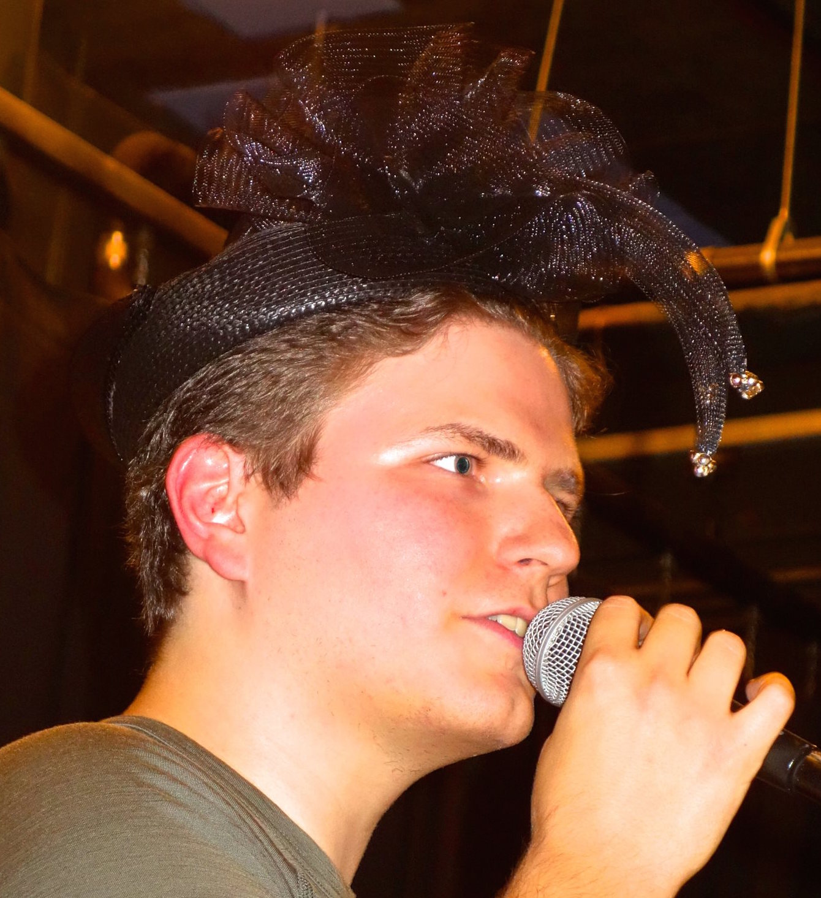

Home
Michael has been having the time of his life calling dances and weekends around North America since 2011. He has honed a warm and concise style of teaching and calling, to the delight of dancers across the continent.
Michael Karcher got hooked on contra dance and ECD at Swarthmore College and fed his habit at CDNY in New York City. He started calling after moving to Seattle and honed a clear, friendly style over the next decade before returning to the east coast.
Michael now calls events across the US and Canada, and dreams of bringing contra dance to Japan and taking contra dance away from France (just kidding). He dances at the Lehigh Valley contra, and is a coordinating caller for the Philadelphia contra.
If you would like to contact Michael, feel free to get in touch.
